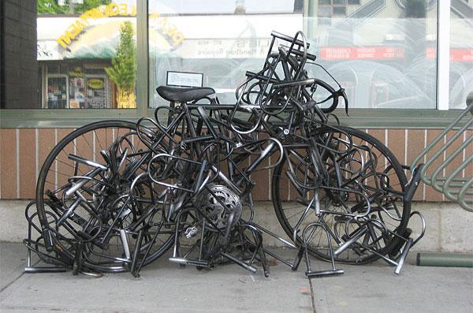

Necessary Purchases
Even after buying a bike, you still need to buy some necessary accessories. You can either
buy them online or at store. Both very good options.
- Helmet: You need a helmet because, well...duh.
- Lock: If you are planning to travel places or get to work, you need a lock to
make sure your bike does not get stolen. Some locks are more secure and expensive than others.
A good rule of thumb is buying a lock that is 1/10 what you payed for the bike.

- Lights: If you are planning to ride your bike at night in the dark, you need some lights
to alert the cars around you that you are there.
- Bike pump: Those wheels wont be perfectly pumped forever. Think ahead and buy a bike pump
- Bike lube: You have to lube your bike chains every once in a while to make sure its riding smooth
and to prolong the lifetime of the bike's delicates.